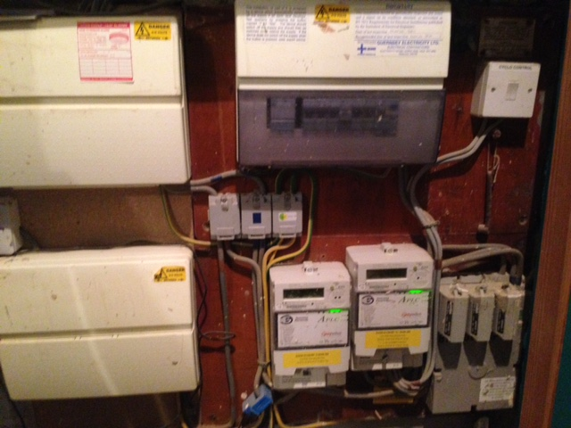

Hi There,
Still feel new to this but for a couple of years I’ve been successfully using a EmonTXv2 reporting to a RFM12 on a Pi which I’ve been using to monitor power from 1 CT. Not monitoring voltage at the moment.
As part of a bunch of house renovations I have had some storage heaters installed by our Electricity supplier which I believe involved adding a 3 phase supply. Of those 3 phases I have 2 connected, one for the heaters and one for everything else.
My question, to monitor the power for the storage heaters is it just a case of adding another CT on the new heater circuit? Which sketch should I use, would the 3-phase one still be suitable if I’m missing a phase?
Re: 2 Phase Monitoring?
If you're not monitoring voltage (i.e. you're 'guessing' apparent power by multiplying the measured current by the nominal system voltage), then just add a CT, your existing sketch will be fine.
In fact, the 3-phase sketch needs the voltage input. If/when you add the voltage, then if you want to measure real power, it's 'all change' because then the phase shifts become important and relevant, and you'll need the 3-phase sketch.
Re: 2 Phase Monitoring?
Great, thanks very much, will give it a go.
Re: 2 Phase Monitoring?
@keithpark,
That doesn't sound quite right. What was the tariff name, Economy 10? This is actually a single phase supply, presented as two feeds - one always ON and one only coming live during the "cheap" rate period(s) + a common neutral. Do you have a shot of the new distribution board layout to share?
Robert's comment about adding a CT is correct - the concern is that going from a single phase supply to three phase implies that (assuming UK) you now have 415V between conductors in the distribution box area - that requires correct labels and substantially more care if any protective covers are removed.
Re: 2 Phase Monitoring?
The tariff is probably a bit different as I'm in the Channel Islands, we have 10 cheap hours overnight plus 2 in the afternoon. The second feed is always on though as I have a panel heater on the heater feed which I can turn on whenever.
Layout image below, the storage side is controlled by a relay in the board on the right. The 'Cyclo Control' switch on the far right seems to turn off the relay trigger. There are 415v warning labels on the boards and heater wall plates. No plans to open anything up, there shouldn't be any risk in adding the second CT?

Re: 2 Phase Monitoring?
I can't see in detail how the wiring out of your main incomer (bottom right) is done. It appears that there are two wires coming out of the right-hand fuse and one, maybe two, from the associated neutral. If that's the case, you DON'T have a 3-phase supply despite the labels - they are there because the supply fuse is a 3-phase one but you most likely don't have a 3-phase supply into it, let alone out of it. The wireman probably didn't have a suitable single phase unit on his van.
Re: 2 Phase Monitoring?
@keithpark,
That is indeed a curious panel layout -
the incoming supply is only single phase, split across two meter sets with three distribution boards. Waiting for an upgrade of the incoming feed perhaps?The good news is that there is no 415V present and that a single wall wart can provide the voltage reference for both CT circuits. Edit: the later description describes 2 of the possible 3 phases implemented - 415V is present!The only "Cyclo" I'm familiar with is an old term for communal heating systems - is this an Economy 20 installation? Note that these time-based deals used to be a good value, but the advantage has eroded over time with tricks like increasing the price of the non-discounted units and bumping up the standing charge.
Re: 2 Phase Monitoring?
Have had a closer look at the main incomer. The left fuse has one cable coming out of it with a brown tag. The middle one is empty and the one on the right has a cable with no tag, then you have the two blue ones at the end.
Re the Cyclo and the boards, it's definitely Economy 12, but maybe 'cyclo' is the wrong name they've given but switching it does stop the heaters warming up. I remember asking why I needed 3 boards when they installed them, apart from the one with the heaters, the other two split the lights and power between the floors. Eg Board 1 has power for floor 1 and lights for floor 2, and Board 2 the other way around, I think he said this was to give some redundancy in case of fire which was recommended/required when they put them in 6/7 years ago.
Re: 2 Phase Monitoring?
The absence of a colour code on the right-hand fuse means that the only way to be certain is to measure voltages. ONLY DO THIS IF YOU ARE ABSOLUTELY CERTAIN THAT YOU CAN DO IT SAFELY and you have the correct multimeter and probes.
Check that your multimeter and the probes are good to at least 600 V and that you have an ac voltage range to at least 500 V. Get someone to watch from a safe distance, who knows what to do if you get into trouble.
Measure the voltage from the line of one of the circuits fed by the left-hand fuse to neutral. Don't try to get in at the top of the main fuse - a light switch or socket is the better place. You should see ~240 V. Do the same on a circuit fed from the right-hand fuse, you should see the same. Now measure the voltage between those two points. If you see 0 V or only a very small voltage, they are on the same phase. If you see 415 V or thereabouts, you definitely have two phases.